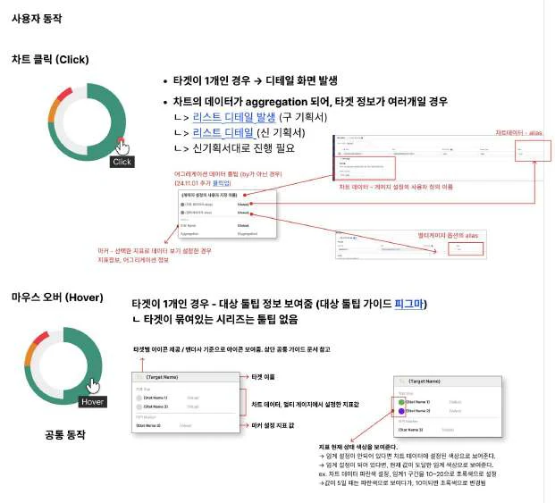
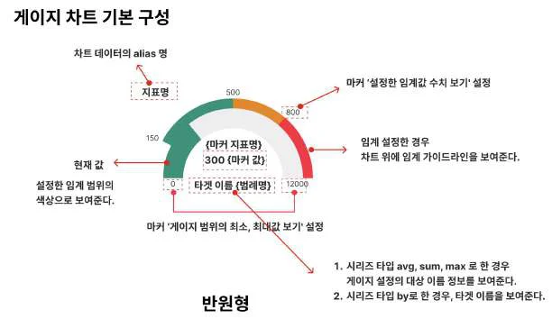
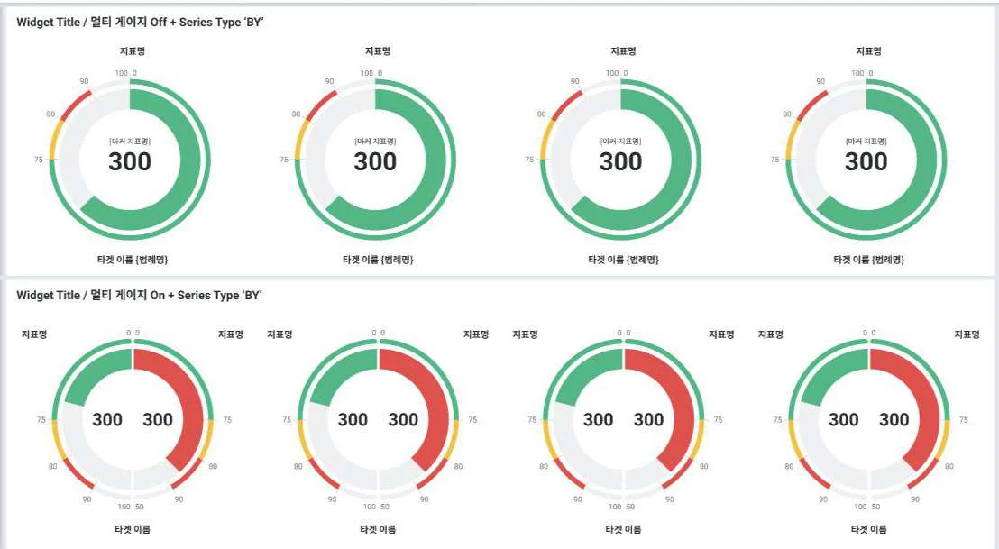
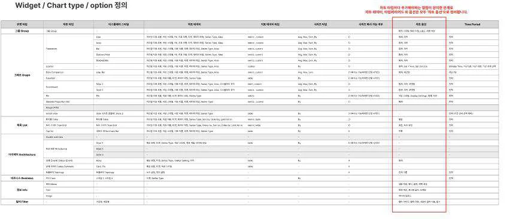
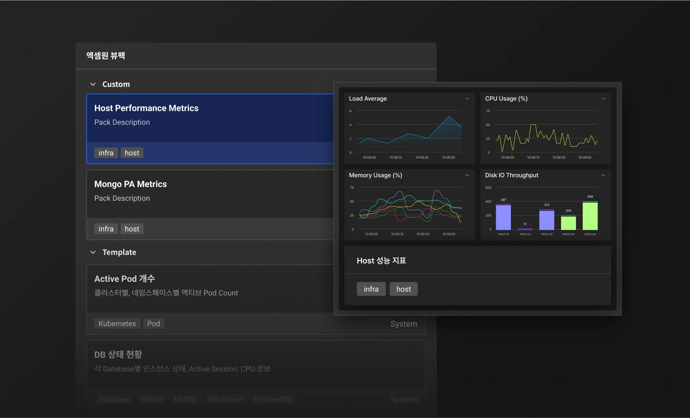
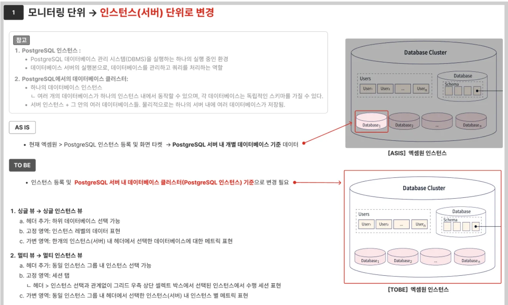
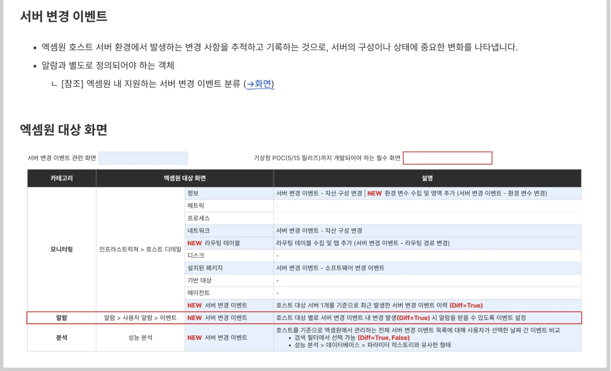

제품 기준은 안에서 먼저 정하고, 고객사 요구는 그 기준 안에서 운영자가 위젯으로 구성하게 했습니다.
문제
DB, APM, 쿠버네티스, 인프라 데이터를 한 제품에서 보려는 요구가 커졌는데, 고객사마다 보고 싶은 대상과 지표가 달라 요청마다 화면을 새로 만들 수 없었습니다.
어떻게 판단했나
시장 조사에서 글로벌 제품은 위젯을 사용자가 직접 구성하는 쪽으로 가고, 국내 제품은 정해진 화면에 머물러 있었습니다. exemONE은 고객사 환경에 설치되는 제품이라 요구마다 화면을 만들면 제품 기준이 흩어집니다. 그래서 DB, APM, 쿠버네티스 엔지니어 인터뷰로 필수 기능을 뽑아 공통 정책, 역할과 권한과 함께 내부 기준으로 먼저 정하고, 고객사 요구는 그 위에서 구성으로 받기로 했습니다.
정한 것
영역별로 정해진 대시보드는 기본으로 두고, 운영자가 위젯을 골라 엮는 구성 기능을 더했습니다. 고객사 요구는 화면 개발이 아니라 위젯 구성으로 받습니다.
기존 제품
영역별로 정해진 대시보드
DB, APM, 인프라를 따로 봄
원하는 지표와 차트로 바꿀 수 없음
exemONE
운영자가 위젯으로 구성
변수로 대상을 바꿔 가며 봄
뷰팩으로 자주 쓰는 조합을 저장
자세히 보기
더 정한 것
대상은 변수로 바꾸고, 자주 쓰는 위젯 조합은 뷰팩으로 미리 묶어, 화면을 새로 만들지 않고도 고객사 맞춤 요구를 받아들일 수 있게 했습니다.
기간 하나를 바꾸면 어디까지 다시 계산하나요?
그 값을 참조하는 위젯만 다시 계산합니다.
문제
분석 보드의 위젯은 다른 위젯의 값을 조건으로 써서, 기간 하나를 바꾸면 어디까지 다시 계산할지 정해야 했습니다.
어떻게 판단했나
모두 다시 계산하면 엔지니어가 비교용으로 만든 분석까지 바뀌고, 가까이 놓인 위젯만 하면 화면 배치에 따라 결과가 달라졌습니다. 기준은 위치가 아니라 「값을 참조하는가」여야 한다고 봤습니다.
정한 것
값을 참조하는 위젯만 다시 계산하고, 먼저 만든 위젯만 참조하게 해 순환을 막았습니다.
위젯 사이의 참조 관계 · 영향을 주는 위젯과 받지 않는 위젯
제품이 모으지 않는 데이터는 어떻게 보나요?
엔지니어가 쓴 쿼리를 공유하면 위젯 지표가 됩니다.
문제
위젯은 제품이 기본으로 모으는 지표만 써서, 고객사마다 다른 업무 데이터는 엔지니어가 DB 쿼리로 직접 조회해야 했습니다.
어떻게 판단했나
엔지니어가 이미 쓰는 쿼리를 위젯 지표로 쓰게 하면 되지만, 개인 쿼리를 그대로 쓰면 다른 사람은 같은 위젯을 볼 수 없고 실행 권한도 문제가 됐습니다.
정한 것
쿼리를 작성 → 공유 → 데이터 설정을 거쳐 위젯 지표로 쓰게 하고, 공유한 쿼리만 지표로 만들게 했습니다.
작성
엔지니어가 DB 쿼리를 씀
공유
공유한 쿼리만 지표로 만들 수 있음
데이터 설정
위젯에서 쓸 지표로 설정
위젯 지표로 사용 · 실행 권한은 역할마다
자세히 보기
더 정한 것
쿼리 실행 권한은 역할마다 나눴습니다.
조건과 인터랙션 정의 6개차트 클릭과 마우스 오버 · 게이지 차트 기본 구성 · 멀티 게이지 · 위젯 · 차트 유형 정의 · 뷰팩 · 역할과 시간 기준을 먼저 정했습니다펼쳐 보기
위젯 하나에도 대상 개수, 집계 방식, 임계값 설정에 따라 보여 줄 것이 달라졌습니다. 조건을 먼저 나눠 정의하고, 시각화가 필요한 곳은 UI와 인터랙션까지 정했습니다.
옆으로 넘겨 보세요

차트 클릭과 마우스 오버
대상이 1개면 클릭할 때 상세 화면을, 집계돼 대상이 여러 개면 목록형 상세를 엽니다. 툴팁은 대상이 1개일 때만 보이고, 색은 임계값 설정 여부와 현재 값에 따라 바뀝니다.

게이지 차트 기본 구성
임계 범위를 색으로 보여 주고, 설정하면 임계 가이드라인과 범위 최소·최대를 표시합니다. 시리즈 타입이 avg·sum·max면 게이지에 설정한 대상 이름을, by면 각 타깃 이름을 보여 줍니다.

멀티 게이지
멀티 게이지 켜고 끄기와 시리즈 타입 by의 조합마다 한 위젯에 그리는 값과 이름 위치를 정의했습니다.

위젯 · 차트 유형 정의
위젯 그룹과 차트 타입마다 쓸 수 있는 데이터, 집계 방식, 옵션을 한 표로 정리하고, 타입별로 추가해야 하는 옵션을 따로 표시했습니다.

뷰팩
운영 목적에 맞춰 자주 쓰는 위젯을 미리 묶은 세트를 제공해, 처음 쓰는 사용자도 불러오기만 하면 대시보드를 바로 꾸릴 수 있게 했습니다.
역할과 시간 기준을 먼저 정했습니다
역할
운영자 · 관리자 · 일반 사용자
권한
대시보드 생성 · 편집 · 공유 · 조회를 역할별로
시간
모든 위젯이 같은 Period / Interval 기준
표현
축 단위, 포맷, 정렬 기준 통일
위젯
시계열 · 단일 값 · 표, 복제 · 저장 · 공유
화면을 그리기 전에 필수 기능, 공통 정책, 권한을 먼저 정의했습니다. 고객사마다 계정 구조가 달라도 부서와 팀 단위로 권한 충돌 없이 쓰게 하려는 것이었습니다.
03직접 눌러 보는 프로토타입
기획한 화면을 실제로 눌러 볼 수 있게 다시 만들었습니다. 아래 「기획 의도」에 마우스를 올리면 화면의 해당 부분이 표시됩니다.
실제 화면 캡처를 바탕으로 다시 만든 화면입니다. 값은 예시입니다.
모바일용으로 다시 만든 화면입니다. 눌러서 동작하고, 값은 예시입니다.
exemONE
변수 「서버」
기간
서버나 기간을 바꾸면 그 값을 참조한 위젯만 다시 계산합니다. 직접 지정한 위젯은 그대로입니다.
대상이 여러 개인 위젯은 목록형 상세가 열립니다. 행을 누르면 그 대상의 상세로 이어집니다.
DB에서 인프라까지 같은 화면 틀로 보고, 문제가 먼저 보이게 하고, 대상을 업무 단위로 묶어 연결 관계를 보게 했습니다.
제품
exemONE · 기업의 인프라, 애플리케이션, DB 데이터를 한곳에 모아 분석하고 관리하고 모니터링하는 B2B 데이터 옵저버빌리티 플랫폼
프로젝트
exemONE 신제품 기획 · 초기 설계부터 출시까지 (2022.12 – 2025.06)
이 사례에서 다룬 것
DB, 애플리케이션, 쿠버네티스, 인프라 모니터링 화면
기간
2023.06 – 2025.06
내 역할
공통 화면 틀, 로그 수집 설정, DB 상세, 클러스터 모니터링, 알람 규칙, 서버 변경 이벤트
01 한눈에 보기
DB · 인스턴스 맵과 SQL 목록애플리케이션 · WAS 맵과 트랜잭션 패널쿠버네티스 · 노드와 파드 상태인프라 · 온프레미스와 클라우드 호스트
네 영역 모두 필터, 상태 요약, 맵, 목록, 오른쪽 상세 패널의 같은 틀을 씁니다
문제
인프라, 애플리케이션, DB, 네트워크 데이터마다 화면 구조가 달라 같은 제품 안에서도 읽는 법이 달랐고, 새 데이터가 들어올 때마다 운영자의 학습 비용이 늘고 상황 판단이 늦어졌습니다. 대상은 기술 단위로만 나뉘어, 한 업무에 문제가 생겨도 영향 범위가 보이지 않았습니다.
한 일
모든 데이터 영역의 공통 레이아웃과 드릴다운 흐름, 비즈니스 목록과 비즈니스 맵, 로그 수집 설정, DB 클러스터, 알람 규칙, 서버 변경 이벤트를 기획했습니다.
바뀐 것
어떤 데이터든 대상 고르기, 알람과 상태, 상세, 원인 분석의 같은 흐름으로 읽습니다. 새 데이터가 추가돼도 화면을 새로 설계하지 않고 정해진 레이아웃과 위젯 체계를 그대로 확장합니다. 업무 단위로 묶인 대상의 연결과 상태는 비즈니스 맵에서 봅니다.
결과
AS-IS데이터마다 다른 화면→TO-BE공통 화면 틀 하나기본 정보, 알람, 메트릭, 로그 순서로 탐색
AS-IS새 데이터마다 새 화면→TO-BE정해진 틀로 확장화면을 새로 설계하지 않아 학습 비용과 유지보수 부담을 줄임
AS-IS기술 단위로만 나뉜 대상→TO-BE업무 단위 비즈니스 맵대상 사이 연결과 영향 범위
인프라, 애플리케이션, DB, 네트워크마다 화면 구조가 달라 같은 제품 안에서도 읽는 법이 달랐고, 새 데이터가 늘 때마다 화면을 새로 설계해야 했습니다.
어떻게 판단했나
데이터마다 다른 것과 늘 같은 것을 나눠 봤습니다. 운영자가 어느 데이터에서든 하는 일은 대상 거르기, 알람과 상태 확인, 지표 보기, 원인 추적으로 같았고, 다른 것은 지표 이름과 엔진별 항목뿐이었습니다.
정한 것
헤더, 필터, 그래프 위치를 공통 레이아웃으로 정하고 모든 데이터에 적용했습니다.
모니터링 대상 필터
알람 · 상태
데이터 모니터링
특정 데이터 추적 · 연계 분석
모든 데이터 유형에 같은 순서 · 엔진별 차이만 따로
자세히 보기
더 정한 것
새 데이터는 엔진별 차이만 정의해 같은 레이아웃과 위젯 체계에 얹습니다.
문제는 어디서 먼저 보이나요?
맵과 알람으로, 상태가 나쁜 대상이 먼저 보이게 했습니다.
문제
대상이 수십 개면 목록만으로는 어디에 문제가 있는지 바로 보이지 않았습니다.
어떻게 판단했나
운영자가 화면을 여는 이유는 「지금 문제 있는 게 있나」였습니다. 그래서 첫 화면은 개수보다 상태가 먼저 읽혀야 하고, 문제를 찾은 자리에서 바로 원인으로 내려갈 수 있어야 한다고 봤습니다.
정한 것
대상을 육각형 맵에 상태 색으로 모으고, 위험과 주의를 맨 위에 요약했습니다.
DB 인스턴스 맵 화면 설계 · 필터, 상태 요약, 인스턴스 맵, 목록
자세히 보기
더 정한 것
맵이나 목록에서 대상을 누르면 화면을 떠나지 않고 알람, 지표, 로그를 한 패널에서 봅니다.
비즈니스 맵
대상을 업무 단위로 묶어 연결 관계와 영향 범위를 봅니다.
업무 안의 대상끼리는 어떻게 연결돼 있나요?
비즈니스 맵에서 대상 사이 호출과 상태를 한 장으로 봅니다.
문제
업무 하나에 여러 대상이 섞여 있어, 문제가 생기면 어디서 시작돼 어디까지 번졌는지 목록만으로는 보이지 않았습니다.
어떻게 판단했나
대상 사이 호출 관계를 선으로 보여 줘야 영향 범위가 보인다고 봤습니다. 그래서 화면을 그리기 전에 노드에 무엇을 담을지, 엣지는 어떤 지표로 이을지, 마우스 오버와 클릭에 무엇을 줄지를 먼저 정의했습니다. 같은 제품의 토폴로지 위젯과 엣지 지표와 동작을 맞추고, 권한이 없는 사람에게는 무엇을 보여 줄지도 정했습니다.
정한 것
노드는 알람 등급 색과 알람 수, 엣지는 Calls/sec로 잇고, 권한이 없으면 상세로 넘어가지 않게 했습니다. 끊긴 연결은 blocked로 표시해 영향 범위가 맵에서 바로 보이게 했습니다.
정의한 것
기준
노드
업무 아이콘과 이름, 테두리 색은 마지막 알람 등급, 배지는 발생 알람 수와 전체 대상 수
노드 가운데(마커)
심볼 또는 활성 건수 · 애플리케이션은 Active Transaction, DB는 Active Sessions
엣지
노드 사이 호출량 Calls/sec(RPS에서 변경) · 대상 유형별 엣지 지표를 나누고, 유형에 맞지 않는 지표는 비활성
마우스 오버
대상 유형별 모니터링 대상 수, 알람 등급별 건수, 송신 · 수신 엣지 지표를 툴팁으로
클릭과 권한
상세 권한이 있으면 비즈니스 상세 슬라이드, 없으면 「권한이 없습니다」 토스트
검색 · 연결 끊김
검색된 대상만 강조(토폴로지와 같은 동작) · 연결을 끊은 대상은 blocked로 맵, 목록, 상세에 함께
그 밖에 정한 것 8개클러스터는 역할로 · 서버 변경 이벤트 · 로그 수집 설정 순서를 바꿨습니다 · 다른 화면으로 가도 맥락이 남습니다 · 데이터와 권한을 같은 구조로 · 대상 설정 화면 · PostgreSQL은 인스턴스 단위로 · 묶은 지표가 모두 Critical일 때만 Critical펼쳐 보기옆으로 넘겨 보세요

클러스터는 역할로
장애 조치로 master가 바뀌어도 위젯이 따라가게 역할 이름으로 묶었습니다. 고객사는 쓰기를 맡은 인스턴스처럼 특정 역할만 골라 보고 싶어 했고, Oracle RAC, MySQL Replication, AWS RDS DB Cluster처럼 DB마다 클러스터 구조도 달랐습니다. 그래서 「업무명_master」처럼 역할 이름으로 대상을 묶었습니다.

서버 변경 이벤트
공공기관 고객사가 서버의 자산, 환경 변수, 소프트웨어, 라우팅 테이블이 바뀌는 즉시 알기를 요청했지만 바뀐 이력은 남지 않았습니다. 이미 모으던 정보로 변경을 정의해, 바뀐 사실을 이벤트로 기록하고 호스트 상세, 알람 설정, 성능 분석에 붙였습니다.
로그 수집 설정 순서를 바꿨습니다
전
로그 유형→로그 환경→파일 옵션→파서
후
모니터링 환경→수집 방법→패스 정보
로그 유형을 먼저 고르고 환경을 고르던 순서가 위계에 맞지 않고 AWS 개념이 겹쳤습니다. 환경부터 고르게 바꾸고, 쓰는 고객이 없던 로그 환경 항목은 뺐습니다.
다른 화면으로 가도 맥락이 남습니다
어디로
대시보드, 상세 화면, 외부 URL
무엇을 넘기나
모니터링 대상, 필터, 상태 정보
흐름
지표 → 이상 징후 → 상세 데이터 → 관련 지점
상세 화면에서 대시보드나 외부 URL로 가는 연계 링크를 두고, 이동한 뒤에도 보던 대상, 필터, 상태를 그대로 넘깁니다.
데이터와 권한을 같은 구조로
시스템 종류가 달라도 같은 구조로 비교할 수 있게 데이터 항목을 정의하고, 환경, 버전, 구성이 달라도 같은 화면과 경보 기준을 적용했습니다. 데이터 접근은 사용자, 조직, 역할별로 제어합니다.
대상 설정 화면
새 모니터링 대상을 추가할 때 연결 방식, 수집 경로, 권한 범위를 한 화면에서 정하도록 환경설정의 대상 설정 화면을 설계했습니다.
PostgreSQL은 인스턴스 단위로
기존 화면은 개별 데이터베이스를 대상으로 삼아 같은 인스턴스의 세션과 자원을 한 번에 볼 수 없었습니다. 인스턴스 하나 안에서 데이터베이스 여러 개가 따로 실행되는 구조라, 인스턴스 전체를 늘 보이게 하고 데이터베이스는 골라 보게 했습니다. 수집 쿼리도 두 단위로 나눠 화면과 맞췄습니다.
묶은 지표가 모두 Critical일 때만 Critical
알람은 지표 값, 수집 상태, 로그와 쿠버네티스 이벤트에서 울려 종류마다 설정 방식이 달랐습니다. 종류, 판정 기준, 체크 방식, 알림 순서의 규칙 틀 하나로 맞췄습니다. CPU와 메모리를 묶은 규칙에서 CPU Critical, 메모리 Warning이면 Warning이고, 이 판정 규칙은 화면 도움말에 그대로 적었습니다.
03직접 눌러 보는 프로토타입
기획한 화면을 실제로 눌러 볼 수 있게 다시 만들었습니다. 아래 「기획 의도」에 마우스를 올리면 화면의 해당 부분이 표시됩니다.
실제 화면 캡처를 바탕으로 다시 만든 화면입니다. 값은 예시입니다.
모바일용으로 다시 만든 화면입니다. 눌러서 동작하고, 값은 예시입니다.
exemONE
인스턴스 · 문제 있는 것부터
카드를 누르면 그 상태만 남고, 행을 누르면 화면을 떠나지 않고 상세가 열립니다.
postg-prd-20
상태
위험
엔진
POSTG
호스트
db-host-20
업무
주문
Active Session 임계 초과3분 전위험
Active Session
38 / 임계 30
CPU
62%
TPS
1,240
같은 시각의 DB 로그가 시간순으로 이어집니다.
모든 엔진이 기본 정보, 알람, 지표, 로그 순서의 같은 틀을 씁니다.
oracl-prd-34
상태
위험
엔진
ORACL
호스트
db-host-34
업무
주문
Connection Pool 고갈7분 전위험
Active Session
38 / 임계 30
CPU
62%
TPS
1,240
같은 시각의 DB 로그가 시간순으로 이어집니다.
모든 엔진이 기본 정보, 알람, 지표, 로그 순서의 같은 틀을 씁니다.
altib-prd-14
상태
주의
엔진
ALTIB
호스트
db-host-14
업무
주문
CPU 사용률 82%14분 전주의
Active Session
38 / 임계 30
CPU
62%
TPS
1,240
같은 시각의 DB 로그가 시간순으로 이어집니다.
모든 엔진이 기본 정보, 알람, 지표, 로그 순서의 같은 틀을 씁니다.
click-prd-25
상태
주의
엔진
CLICK
호스트
db-host-25
업무
주문
Slow Query 증가16분 전주의
Active Session
38 / 임계 30
CPU
62%
TPS
1,240
같은 시각의 DB 로그가 시간순으로 이어집니다.
모든 엔진이 기본 정보, 알람, 지표, 로그 순서의 같은 틀을 씁니다.
redis-prd-40
상태
주의
엔진
REDIS
호스트
db-host-40
업무
주문
디스크 사용률 88%13분 전주의
Active Session
38 / 임계 30
CPU
62%
TPS
1,240
같은 시각의 DB 로그가 시간순으로 이어집니다.
모든 엔진이 기본 정보, 알람, 지표, 로그 순서의 같은 틀을 씁니다.
mysql-prd-11
상태
정상
엔진
MYSQL
호스트
db-host-11
업무
주문
최근 알람이 없습니다.
Active Session
38 / 임계 30
CPU
62%
TPS
1,240
같은 시각의 DB 로그가 시간순으로 이어집니다.
모든 엔진이 기본 정보, 알람, 지표, 로그 순서의 같은 틀을 씁니다.
tiber-prd-13
상태
정상
엔진
TIBER
호스트
db-host-13
업무
주문
최근 알람이 없습니다.
Active Session
38 / 임계 30
CPU
62%
TPS
1,240
같은 시각의 DB 로그가 시간순으로 이어집니다.
모든 엔진이 기본 정보, 알람, 지표, 로그 순서의 같은 틀을 씁니다.
맨 위 위험, 주의 알람 누르기그 알람부터 상세가 열립니다.
exemONE / 데이터 모니터링프로토타입 · 눌러서 동작합니다
기획 의도 항목에 마우스를 올리면 화면의 해당 부분이 표시됩니다
무엇부터 볼지 먼저 보여 줍니다위험과 주의를 맨 위에 두고, 목록도 문제 있는 것만 위험부터 보여 줍니다. 「바로 열기」를 누르면 그 알람부터 상세가 열립니다.
화면을 떠나지 않고 상세를 봅니다맵이나 목록에서 대상을 고르면 오른쪽 패널에 알람, 지표, 로그가 함께 열립니다. 모든 영역이 기본 정보, 알람, 지표, 로그 순서의 같은 틀을 씁니다.
엔진이 늘어도 화면은 하나입니다탭, 조회 기간, 단위는 모든 엔진이 같습니다. Tibero, Altibase처럼 다른 부분만 엔진별로 따로 정의했습니다.
모바일용으로 다시 만든 화면입니다. 눌러서 동작하고, 값은 예시입니다.
exemONE
기술 단위가 아니라 업무 단위로 대상을 묶어, 업무 안의 연결과 영향 범위를 봅니다.
엣지 지표
권한
web-gworder-wasorder-db
SQL 수행 수는 DB에만 있어, 애플리케이션 줄은 「해당 없음」으로 나옵니다.
web-gw
유형
애플리케이션
상태
정상
송신 · 수신
42 calls/s
응답 시간
0.12s
SQL 수행 수
해당 없음
끊으면 맵, 목록, 상세에 blocked가 함께 표시됩니다.
권한이 없습니다
상세 권한이 없으면 대상 정보 없이 이 문구만 보입니다.
order-was
유형
애플리케이션
상태
주의
송신 · 수신
128 calls/s
응답 시간
0.84s
SQL 수행 수
해당 없음
끊으면 맵, 목록, 상세에 blocked가 함께 표시됩니다.
권한이 없습니다
상세 권한이 없으면 대상 정보 없이 이 문구만 보입니다.
pay-was
유형
애플리케이션
상태
정상
송신 · 수신
57 calls/s
응답 시간
0.31s
SQL 수행 수
해당 없음
끊으면 맵, 목록, 상세에 blocked가 함께 표시됩니다.
권한이 없습니다
상세 권한이 없으면 대상 정보 없이 이 문구만 보입니다.
order-db
유형
DB
상태
위험
송신 · 수신
31 calls/s
응답 시간
1.92s
SQL 수행 수
412회
끊으면 맵, 목록, 상세에 blocked가 함께 표시됩니다.
권한이 없습니다
상세 권한이 없으면 대상 정보 없이 이 문구만 보입니다.
pay-db
유형
DB
상태
정상
송신 · 수신
9 calls/s
응답 시간
0.08s
SQL 수행 수
96회
끊으면 맵, 목록, 상세에 blocked가 함께 표시됩니다.
권한이 없습니다
상세 권한이 없으면 대상 정보 없이 이 문구만 보입니다.
노드에 마우스 올리기대상 수, 알람 등급별 건수, 송신 · 수신 호출량이 나옵니다.
노드를 눌러 「연결 끊기」맵, 목록, 상세에 blocked가 함께 표시되고 선의 흐름이 멈춥니다.
엣지 지표를 「SQL 수행 수」로, 권한 체크 끄기맞지 않는 선은 「해당 없음」, 권한이 없으면 「권한이 없습니다」만 뜹니다.
exemONE / 비즈니스 맵프로토타입 · 눌러서 동작합니다
권한이 없습니다
대상
유형
상태
알람
활성 건수
노드에 마우스를 올리거나 눌러 보세요. 선 위의 점은 호출이 흐르는 방향과 양입니다.
04 작업한 내용
실제 화면
옆으로 넘겨 보세요
로그 수집 설정 흐름 개선 · AS-IS와 TO-BE클러스터 알람 로그 화면 정의서버 변경 이벤트 · 대상 화면 정의비즈니스 목록 화면 설계WAS 상세 · 연결 끊김 상태 정보 추가출시 화면 · 비즈니스 서비스 현황CUBRID 통합 대시보드지원 대상
같은 거래로 이어진 구간만 잇고, 다른 제품이 수집한 구간은 점선 카드로 구분해 그 제품 화면으로 보냅니다.
문제
애플리케이션과 DB를 따로 보면 거래 하나가 어느 구간에서 느려졌는지 알 수 없었습니다.
어떻게 판단했나
사용자 접근 환경부터 웹서버, WAS, DB까지 같은 거래로 이어진 구간을 한 줄로 봐야 느린 곳을 고를 수 있다고 봤습니다. 다만 모든 구간을 우리 제품이 수집하지는 않아, 어느 제품의 데이터인지가 카드에서 바로 보여야 했습니다.
정한 것
같은 거래 ID로 이어진 구간만 묶어 접근 환경, 웹서버, WAS, DB 순서로 놓고, 다른 제품이 수집한 구간은 점선 카드로 구분해 그 제품 화면으로 넘어가게 했습니다.
사용자 접근 환경
브라우저 또는 모바일 앱
웹서버
요청 헤더의 trace id로 앞뒤를 이음
WAS
우리 제품, 또는 다른 제품(점선 카드)
DB
그 DB가 직접 수행한 SQL만 셈
같은 거래 ID로 이어진 구간만 한 경로로
자세히 보기
더 정한 것
다른 제품이 수집한 구간은 점선 카드와 제품 표시로 구분하고, 상세는 그 제품 화면에서 보게 했습니다. 접근 환경은 브라우저와 모바일 앱을 나눠, 모바일 앱이면 첫 구간이 모바일 앱을 수집하는 제품의 구간이 됩니다.
사용자 쪽 · 웹 애플리케이션 RUM
브라우저에서 본 웹 애플리케이션 성능. 서버가 정상이어도 사용자가 느린 경우를 찾습니다.
사용자 브라우저에서 웹 애플리케이션이 느린 건 어떻게 찾나요?
느린 웹 애플리케이션을 로드 시간 순위로 찾고, 페이지 로드를 구간으로 나눠 봅니다.
문제
서버 지표가 정상이어도 사용자 브라우저에서는 느릴 수 있는데, 기존 화면으로는 그걸 볼 방법이 없었습니다.
어떻게 판단했나
운영자가 먼저 알아야 하는 건 「어느 웹 애플리케이션이 느린가」이고, 그다음이 「어느 구간에서 느린가」라고 봤습니다. 그래서 개별 수치를 나열하기보다 순위로 먼저 좁히고, 고른 페이지에서 구간을 나눠 보는 두 단계로 나눴습니다.
정한 것
RUM 메인에서 웹 애플리케이션 그룹으로 거른 뒤 평균 페이지 로드 시간 순위, 페이지 호출 수, AJAX 응답 시간 추이를 보여 주고 평균 4초 이상은 강조했습니다.
웹 애플리케이션 RUM · 페이지 로드 타임라인 · 구간별 경과 시간과 주요 이벤트 시점
자세히 보기
더 정한 것
페이지를 고르면 로드 타임라인을 캐싱, DNS, 연결, 요청 대기, 다운로드, 렌더링 구간으로 나눠 봅니다.
03 직접 눌러 보는 프로토타입
기획한 화면을 실제로 눌러 볼 수 있게 다시 만들었습니다. 「기획 의도」에 마우스를 올리면 화면의 해당 부분이 표시됩니다.
트랜잭션 E2E와 RUM 기획서를 바탕으로 다시 만든 화면입니다. 값은 예시입니다.
모바일용으로 다시 만든 화면입니다. 눌러서 동작하고, 값은 예시입니다.
exemONE
사용자 접근 환경
같은 거래 ID로 이어지는 구간만 한 경로로 묶습니다. 점선 카드는 다른 제품이 수집한 구간입니다.
↓↓↓
브라우저 · /order/checkout
로딩 시간
1.49 s
브라우저
Chrome
기기 · OS
Desktop · Windows
모바일 앱 · 결제 요청
Elapse
2.31 s
OS
Android
모바일 구간은 다른 제품이 수집합니다. 상세는 그 제품 화면에서 봅니다.
웹서버 · nginx-gw-01
Base Target
/api/order
Status
200
웹서버 구간은 trace id로 앞뒤 구간을 잇습니다.
WAS : /api/order
Elapsed Time
0.842 s
SQL 수행
12회 · 0.041 s
Remote 호출
2회 · 0.77 s
Remote 시간이 대부분이라 다음 WAS 구간을 봐야 한다는 게 보입니다.
개별 SQL
SELECT … FROM orders · 8회
WAS : /api/payment
Elapsed Time
0.708 s
SQL 수행
3회
다른 제품이 수집한 WAS라 카드에 제품 표시를 붙이고, 상세는 그 제품으로 보냅니다.
DB : order-db
호출한 트랜잭션
/api/order 외 2
DB 수행
8회 · 0.035 s
여러 WAS가 같은 DB를 불러도 이 DB가 직접 수행한 SQL만 셉니다.
SQL 서머리
이 DB에서 수행한 SQL만
세션
Logon Time, Schema, Program
DB : pay-db
DB 수행
3회 · 0.62 s
세션 정보는 수집한 제품에 있어 그 제품 상세로 넘어갑니다.
경로에서 카드 누르기위쪽 경로는 그대로 두고 아래 정보만 바뀝니다.
점선 카드(다른 제품) 누르기정보 탭 안에 그 제품으로 넘어가는 버튼이 나옵니다.
접근 환경을 「모바일 앱」으로첫 카드가 모바일 APM이 수집한 구간으로 바뀝니다.
exemONE / 트랜잭션 E2E프로토타입 · 눌러서 동작합니다
사용자 접근 환경
사용자 접근 환경
웹서버
수집 제품 · WAS
수집 제품 · DB
구간
대상
수집
Elapse
선택한 대상-
경로에서 카드를 눌러 보세요. 위쪽 경로는 그대로 두고 아래 정보만 바뀝니다.
기획 의도항목에 마우스를 올리면 화면의 해당 부분이 표시됩니다
같은 거래만 한 경로로같은 거래 ID로 이어지는 구간만 묶고, 앞은 사용자 접근 환경, 뒤는 수집 제품 순서로 놓습니다.
출처가 카드에 보이게다른 제품이 수집한 구간은 점선 카드와 제품 표시로 구분하고, 상세는 그 제품 화면으로 보냅니다.
대상마다 다른 탭우리 제품 WAS와 연계된 DB는 탭을 더 두고, DB 수치는 그 DB가 직접 수행한 SQL만 셉니다.
모바일용으로 다시 만든 화면입니다. 눌러서 동작하고, 값은 예시입니다.
exemONE
RUM 그룹
평균 페이지 로드 시간 순위
운영자가 먼저 알아야 하는 건 어느 애플리케이션이 느린가라, 순위로 좁히고 4초 이상은 강조합니다.
경과 시간5.20s
백엔드2.65s
프론트엔드2.05s
페이지 로드 타임라인
막대 하나로 어느 구간이 대부분인지 보고, 구간을 누르면 뜻이 나옵니다.
경과 시간4.31s
백엔드1.90s
프론트엔드2.08s
페이지 로드 타임라인
막대 하나로 어느 구간이 대부분인지 보고, 구간을 누르면 뜻이 나옵니다.
경과 시간3.11s
백엔드1.32s
프론트엔드1.53s
페이지 로드 타임라인
막대 하나로 어느 구간이 대부분인지 보고, 구간을 누르면 뜻이 나옵니다.
경과 시간2.40s
백엔드0.98s
프론트엔드1.23s
페이지 로드 타임라인
막대 하나로 어느 구간이 대부분인지 보고, 구간을 누르면 뜻이 나옵니다.
경과 시간1.80s
백엔드0.69s
프론트엔드0.95s
페이지 로드 타임라인
막대 하나로 어느 구간이 대부분인지 보고, 구간을 누르면 뜻이 나옵니다.
캐싱 시간
캐시에서 리소스를 읽는 시간
DNS 시간
도메인을 IP로 바꾸는 시간
연결 시간
서버와 TCP 연결을 맺는 시간
요청 대기 시간
요청 후 첫 응답까지 기다린 시간
다운로드 시간
응답을 내려받는 시간
렌더링 시간
화면에 그리는 시간
TTFB
서버로부터 첫 번째 바이트를 받은 시점입니다. 서버 응답 속도와 네트워크 지연을 봅니다.
순위에서 애플리케이션 누르기페이지 로드가 구간별로 나뉘어 보입니다.
구간이나 세로선에 마우스 올리기구간 시간과 주요 이벤트 시점 설명이 나옵니다.
RUM 그룹 체크 끄기순위가 그 그룹 기준으로 다시 정렬됩니다.
exemONE / 페이지 성능(RUM)프로토타입 · 눌러서 동작합니다
RUM 그룹
평균 4초 이상은 강조합니다
애플리케이션별 평균 페이지 로드 시간 순위
페이지 로드 타임라인 -
로드 타임라인 상세 구간이나 세로선에 마우스를 올려 보세요
기획 의도항목에 마우스를 올리면 화면의 해당 부분이 표시됩니다
순위로 먼저 좁히기운영자가 먼저 알아야 하는 건 어느 애플리케이션이 느린지라, 평균 로드 시간 순위를 먼저 두고 4초 이상은 강조합니다.
한 줄로 전체 비율페이지 로드를 막대 하나로 이어 보여 줘, 어느 구간이 대부분을 차지하는지 바로 보입니다.
구간과 이벤트 시점을 함께구간별 막대 위에 TTFB, DOM Interactive 같은 시점을 세로선으로 겹쳐, 용어를 몰라도 툴팁으로 뜻을 확인합니다.
모바일용으로 다시 만든 화면입니다. 눌러서 동작하고, 값은 예시입니다.
exemONE
CLIENT_11923 · Chrome · Windows · Desktop 13:00:00 접속 · 체류 4분 12초
이벤트
먼저 일어난 일이 위에 와서, 사용자가 무엇을 하다 느려졌는지 따라갑니다.
페이지 로드
분류
성능 이벤트
시간
13:00:00
내용
/main · 1.84 s
클릭
분류
사용자 이벤트
시간
13:00:06
내용
상품 검색 버튼
AJAX 로드
분류
성능 이벤트
시간
13:00:07
내용
/api/search · 0.62 s
연속 클릭
분류
사용자 이벤트
시간
13:00:15
내용
장바구니 담기 · 1초에 4번
console error
분류
오류 이벤트
시간
13:00:16
내용
/cart · TypeError
AJAX 로드
분류
성능 이벤트
시간
13:00:24
내용
/api/cart · 3.42 s
클릭
분류
사용자 이벤트
시간
13:00:31
내용
결제하기
분류 버튼 끄고 켜기성능, 사용자, 오류 이벤트를 골라 봅니다.
「흐름」으로 바꾸기같은 이벤트를 시간순 흐름으로 봅니다.
이벤트 누르기아래에 상세가 나옵니다.
exemONE / 사용자 세션(RUM)프로토타입 · 눌러서 동작합니다
사용자 세션 정보
세션 ID
c9d4…2947
사용자 ID
CLIENT_11923
접속 시간
13:00:00
체류 시간
4분 12초
브라우저 · OS
Chrome · Windows
디바이스
Desktop
사용자 세션 플로우
기획 의도항목에 마우스를 올리면 화면의 해당 부분이 표시됩니다
누가 어떤 환경에서세션 ID, 사용자, 접속 시간, 브라우저와 OS를 먼저 보여 줘 재현 조건을 바로 압니다.
이벤트를 세 갈래로성능 이벤트, 사용자 이벤트, 브라우저 오류로 나눠 필요한 것만 골라 봅니다.
먼저 일어난 일이 위로시간 오름차순으로 놓고 테이블과 흐름 두 가지로 볼 수 있게 해, 사용자가 무엇을 하다 느려졌는지 따라갑니다.
04 작업한 내용
서버 쪽 · 실제 화면
옆으로 넘겨 보세요
서버 쪽 · WAS 맵과 목록
사용자 쪽 · 웹 애플리케이션 RUM 기획서
옆으로 넘겨 보세요
웹 애플리케이션 RUM · 상세 · 메트릭 탭과 LCP, INP, CLS 표현 방법웹 애플리케이션 RUM · 상세 · 페이지 분석 스캐터 차트와 페이지 목록웹 애플리케이션 RUM · 개별 페이지 분석 · 리소스 타임라인웹 애플리케이션 RUM · 알람 · 이벤트 종류 다섯 가지와 상태 임계치웹 애플리케이션 RUM · 사용자 세션 분석 · 세션 정보와 성능·사용자 이벤트, 브라우저 오류를 시간순 흐름으로
엔지니어가 서버마다 접속해 패키지를 올리고, 실행하고, 결과를 따로 확인해야 했고 플랫폼마다 방식도 달랐습니다.
어떻게 판단했나
요구사항이 정해지지 않은 상태라, 화면부터 그리지 않고 에이전트마다 설치 구조와 패키지 전달 경로를 먼저 검토해 화면에서 실제로 지원할 수 있는 작업을 가렸습니다.
정한 것
패치 파일 고르기 → 대상 고르기 → 실행 → 결과 확인을 한 화면 흐름으로 묶었습니다.
패치 파일 고르기
버전별 파일 목록에서
대상 에이전트 고르기
플랫폼과 상태로 걸러 여러 대를 한 번에
실행
실행 중인 대상은 멈출 수 있음
결과 확인
대상별 성공과 실패, 재시도와 재배포
명령어 없이 화면에서 끝냄
자세히 보기
더 정한 것
패치는 대상 서버에 실제로 올라간 패키지를 기준으로 상태를 검증한 뒤 진행합니다.
에이전트 상태는 어떻게 보여 주나요?
지금 상태만이 아니라 어떻게 바뀌어 왔는지를 보여 줍니다.
문제
실패나 응답 불가가 생겨도 지금 상태만 보여, 왜 그렇게 됐는지와 다음에 무엇을 할지 알 수 없었습니다.
어떻게 판단했나
운영자가 다음 조치를 고르려면 「지금 무엇인가」보다 「어떻게 여기까지 왔나」가 필요하다고 봤습니다. 그래서 화면보다 먼저 배포 실패와 오류가 어떤 상태로 이어지는지 정의했습니다.
정한 것
상태를 정상, 오류, 응답 불가, 중단 네 가지로 정하고, 바뀔 때마다 누가, 언제, 왜 바꿨는지 상태 전이로 남겼습니다.
상태 전이
원인
다음 조치
정상 → 패치 중 → 정상
패치 요청, 패키지 검증 완료
없음
패치 중 → 오류
패키지 검증 실패
재배포
정상 → 응답 불가
에이전트 응답 없음
재배포
정상 → 중단
사용자가 중지
재기동
자세히 보기
더 정한 것
오류와 응답 불가는 재배포 중심으로 처리합니다.
패치 뒤에는 무엇을 확인하나요?
패치 결과, 에이전트에 연결된 대상, 로그를 함께 봅니다.
문제
패치를 실행한 기록만으로는 대상에 실제로 반영됐는지 알 수 없었습니다.
어떻게 판단했나
「무엇을 실행했나」와 「실제로 반영됐나」는 다른 질문이라 나눠 보여야 한다고 봤습니다. 또 에이전트가 멈추면 그 에이전트가 모니터링하던 대상도 데이터가 끊기므로, 영향받는 대상까지 함께 보여야 했습니다.
정한 것
패치 결과 이력은 실행 단위로 쌓고 대상마다 버전, 결과, 메시지를 펼쳐 봅니다. 에이전트 상세에서는 연결된 대상과 로그를 함께 봅니다.
패치 결과 이력
실행 단위
실행 ID, 파일, 시각
성공과 실패 건수
에이전트 상세
대상 단위
상태 전이와 패치 결과
연결된 대상과 로그
자세히 보기
더 정한 것
에이전트를 누르면 상태 전이, 패치 결과, 연결된 대상, 로그를 함께 봅니다.
그 밖에 정한 것 2개동작 제어와 패치를 나눴습니다 · 패치 실행 결과는 상태마다 쓸 동작을 정함펼쳐 보기옆으로 넘겨 보세요
동작 제어와 패치를 나눴습니다
동작 제어
추가 · 재기동 · 중지 · 삭제
패치
업로드된 패키지 검증 → 버전 반영
이력
배포 · 실행 단위로 저장, 대상별 변경 내역 조회
추가, 재기동, 중지, 삭제는 수집을 이어 가기 위한 동작 제어로, 패치는 대상 서버에 실제 올라간 패키지를 기준으로 검증한 뒤 진행하는 버전 업데이트로 나눴습니다.
패치 실행 결과는 상태마다 쓸 동작을 정함
Ready, Sending, Running, Stopping, Stopped, Failed, Failed Sending, Succeeded, Timeout으로 나누고, 상태마다 Stop과 Retry 중 쓸 수 있는 동작을 정했습니다. 시작한 지 24시간이 지난 패치는 버튼을 비활성화합니다.
03직접 눌러 보는 프로토타입
기획한 화면을 실제로 눌러 볼 수 있게 다시 만들었습니다. 아래 「기획 의도」에 마우스를 올리면 화면의 해당 부분이 표시됩니다.
실제 화면 캡처를 바탕으로 다시 만든 화면입니다. 값은 예시입니다.
모바일용으로 다시 만든 화면입니다. 눌러서 동작하고, 값은 예시입니다.
exemONE
플랫폼
명령어 대신 목록에서 대상을 고릅니다. 상태는 정상, 오류, 응답 불가, 중단 네 가지입니다.
5.2.1 패치 · 대상 3개 2024-08-21 10:12 · admin
db-prd-01ora-agent · 5.2.1성공
db-prd-02mysql-agent · 5.2.1성공
db-prd-03pg-agent · 패키지 확인 실패실패
db-prd-03pg-agent · 5.2.1 재배포성공
실패한 대상만 다시 배포했습니다. 이력은 작업 단위로 쌓고, 결과는 대상마다 봅니다.
패치는 대상 서버에 실제로 올라간 패키지를 기준으로 상태를 검증한 뒤 진행합니다.
ora-agent · db-prd-01
지금 상태 정상
1설치
2정상
3정상 유지
버전
5.2.1
마지막 패치
2024-08-21
에이전트 로그가 시간순으로 나옵니다.
pg-agent · db-prd-03
지금 상태 오류
1설치
2정상
3오류
버전
5.1.8
마지막 패치
2024-08-21
에이전트 로그가 시간순으로 나옵니다.
java-agent · was-02
지금 상태 응답 불가
1설치
2정상
3응답 불가
버전
4.9.0
마지막 패치
2024-08-21
에이전트 로그가 시간순으로 나옵니다.
k8s-agent · node-pool-b
지금 상태 중단
1설치
2정상
3중단
버전
3.4.2
마지막 패치
2024-08-21
에이전트 로그가 시간순으로 나옵니다.
net-agent · sw-core-01
지금 상태 정상
1설치
2정상
3정상 유지
버전
2.0.7
마지막 패치
2024-08-21
에이전트 로그가 시간순으로 나옵니다.
aws-agent · aws-ap-ne-2
지금 상태 정상
1설치
2정상
3정상 유지
버전
1.6.3
마지막 패치
2024-08-21
에이전트 로그가 시간순으로 나옵니다.
대상을 골라 패치실패한 대상만 골라 재배포할 수 있습니다.
에이전트 이름 누르기상태 전이, 패치 결과, 연결된 대상, 로그가 오른쪽에 열립니다.
exemONE / 에이전트 운영프로토타입 · 눌러서 동작합니다
기획 의도 항목에 마우스를 올리면 화면의 해당 부분이 표시됩니다
모든 에이전트를 한 목록에서 봅니다DB, APM, Kubernetes, Network, Cloud 에이전트를 플랫폼별로 걸러 보는 한 목록에서 시작합니다. 명령어 대신 목록에서 대상을 고릅니다.
동작 제어와 패치는 정책이 다릅니다재기동, 중지는 지금 동작을 바꾸는 일이고, 패치는 대상 서버에 실제로 올라간 패키지를 기준으로 상태를 검증한 뒤 진행합니다.
실행 기록과 반영 결과를 나눴습니다패치 결과 이력은 작업 단위로 쌓고, 대상마다 버전, 상태, 로그로 결과를 봅니다. 실패한 대상만 골라 재배포합니다.
04 작업한 내용
실제 기획서
옆으로 넘겨 보세요
에이전트 패치 기획서 · 패치 실행 결과 상태와 상태별 동작(Stop, Retry)에이전트 패치 기획서 · 실행 상세 · 에이전트별 결과, 메시지, 대상 표현에이전트 상세 기획서 · 대상 탭 · 호스트 에이전트는 대상과 1:1구현 화면 · 목록, 패치, 패치 이력정책 정의 · 동작 제어와 패치, 상태 기준전략 도출 · 요구사항, 설치 구조, 시나리오화면 설계 · 목록, 상세, 패치 이력화면 설계와 구현
기획팀이 없던 엑셈에서 기획 체계를 새로 만들었습니다. 기획 과정과 문서 양식을 정하고, Figma 기획서도 여럿이 같은 규칙으로 쓰게 했습니다.
제품
exemONE · 기업의 인프라, 애플리케이션, DB 데이터를 한곳에 모아 분석하고 관리하고 모니터링하는 B2B 데이터 옵저버빌리티 플랫폼
프로젝트
엑셈 기획 체계 신규 구축 · 기획 과정, 문서 양식, Figma 기획서
기간
2024.03 – 2024.04
내 역할
기획 과정과 문서 양식, 협업 부서와의 소통 방식, UX 라이팅 가이드, 리뷰 프로세스, 공통 정책과 권한 문서, Figma 기획서 규칙
01 한눈에 보기
Figma 문서 체계 · 사용, 스타일, 레이아웃 가이드
문제
엑셈에는 기획팀이 없어 기획 과정도, 문서 양식도, 다른 팀과 기획서를 주고받는 방식도 정해져 있지 않았습니다. 기획자가 늘면서 같은 기능도 사람마다 다른 형식으로 그려졌습니다.
한 일
기획 과정 네 단계와 문서 양식(요구사항, 기능 정의서, IA, 스토리보드, 화면별 권한, 다국어 문서)을 새로 만들고, 협업 부서와 기획서를 주고받는 방식, UX 라이팅 가이드, 기획 리뷰 프로세스를 도입했습니다. Figma 기획서는 파일, 브랜치, 이름 규칙과 공통 컴포넌트로 여럿이 함께 쓰게 했습니다.
바뀐 것
누가 맡아도 같은 순서로 정리하고 같은 양식의 산출물을 남깁니다. Figma 기획서도 같은 컴포넌트와 패턴으로 그립니다.
결과
AS-IS기획 과정 · 양식 없음→TO-BE새로 만든 기획 체계기획 과정 네 단계와 문서 양식
AS-IS한 파일에 쌓이는 수정→TO-BE브랜치로 나눈 문서변경 이력 추적
AS-IS사람마다 다른 해석→TO-BE같은 구조에서 작업신규 인력 온보딩 단축, 문서 누락과 해석 차이 감소
vSphere, AWS, Kubernetes는 리전 유무, 자원 구조, 상태 값이 달라, 플랫폼별로 화면을 만들면 쓰는 법도 플랫폼마다 달라졌습니다.
어떻게 판단했나
플랫폼마다 다른 것(리전, 자원 종류)과 운영자가 늘 하는 일(위험한 자원부터 찾기)을 나눴습니다. 상태 값은 vCenter 헬스 상태의 빨강, 노랑, 초록, 회색을 기준으로 맞출 수 있었습니다.
정한 것
어느 클라우드든 공급자 → 리전 → 개요 순서로 들어오고, 리전이 없으면 건너뜁니다. 상태는 위험, 확인 필요, 정상, 측정 불가 네 가지로 맞췄습니다.
플랫폼
1 공급자
2 리전
3 개요
vSphere
vCenter
없음
자원 상태 네 가지
AWS
계정
리전 선택
위험한 자원, 알람, 비용
Kubernetes
클러스터
없음
노드와 파드 상태
상태 기준
빨강 위험 · 노랑 확인 필요
초록 정상 · 회색 측정 불가
자세히 보기
더 정한 것
상태는 위험, 확인 필요, 정상, 측정 불가 네 가지로 맞췄고, 쿠버네티스 계열 설계서 세 개도 같은 틀을 씁니다.
여러 클러스터에 흩어진 업무 자원은 어떻게 찾나요?
업무 라벨에서 연결 자원까지 관계도 한 장으로 따라갑니다.
문제
쿠버네티스 자원은 파드, 서비스처럼 기술 단위로 나뉘어, 한 업무의 자원을 보려면 클러스터마다 화면을 옮겨 다녀야 했습니다.
어떻게 판단했나
운영자는 업무 단위로 찾으니 업무 라벨에서 출발해 좁혀 가는 게 맞다고 봤습니다. 같은 라벨이 두 클러스터에 있을 때 합치면 어느 클러스터 자원인지 알 수 없었고, 네임스페이스를 눌렀을 때 화면 전체를 바꾸면 보던 맥락이 끊겼습니다.
정한 것
업무 라벨 → 클러스터 → 네임스페이스 → 자원 유형으로 좁히는 관계도를 만들고, 같은 라벨은 따로 그렸습니다.
1안 · 관계도 전체를 바꿈
이전 버튼으로 돌아감
보던 맥락이 끊김
2안 · 채택
관계도는 유지, 오른쪽 패널
연결 자원 탭을 먼저 엶
맵에서 자원을 누르면 목록의 같은 행에 초점
자세히 보기
더 정한 것
네임스페이스를 누르면 관계도는 유지하고 오른쪽 패널에 연결 자원을 엽니다. 겹치는 차트와 집계 표는 뺐습니다.
쿠버네티스 과금
청구서에 한 줄로 나오던 쿠버네티스 비용을 실제 쓴 만큼 업무별로 나눕니다.
청구서에 없는 쿠버네티스 비용은 어떻게 나눴나요?
파드가 실제로 쓴 만큼 업무별로 나누고, 숫자마다 계산 과정을 보여 줍니다.
문제
노드 비용은 청구서에 VM 한 대로만 나와 어느 업무가 얼마나 썼는지 알 수 없었습니다.
어떻게 판단했나
파드가 요청한 자원과 실제로 쓴 자원이 달라, 무엇으로 세느냐에 따라 금액이 달라졌습니다. 업무별로 나눈 금액을 믿고 쓰려면 실제 사용량을 기준으로 하고, 숫자마다 어떻게 나왔는지 확인할 수 있어야 한다고 봤습니다.
정한 것
파드가 5분마다 실제로 쓴 CPU와 메모리에 클러스터별 단가를 곱해 과금하고, request는 사용률을 보여 줄 때만 씁니다. 합계마다 「계산 보기」로 단가, 사용량, 버림 전후 금액을 펼쳐 볼 수 있습니다.
파드 상세 · 계산 보기로 단가와 사용량, 금액을 펼쳐 봄
자세히 보기
더 정한 것
금액은 파드, 일, 자원마다 계산해 10원 미만은 버리고, 수집이 빠진 날은 관측된 시간만 청구합니다. 단가를 정하지 않은 클러스터는 기본 단가로 과금해 0원 청구가 없게 했고, 바꾼 단가는 다음 달 1일 0시부터 적용하며 변경 이력을 남깁니다.
자사 제품 연동
다른 자사 제품 계정과 이어 쓰고, 정책이 어긋나면 하나로 맞추고, 연동이 실패하면 이유를 알려 줍니다.
자사 제품과 계정을 어떻게 연동하나요?
가진 계정에 따라 로그인과 가입 흐름을 네 갈래로 나눴습니다.
문제
회사의 다른 제품과 함께 납품되거나 한쪽이 먼저 납품되어, 사용자마다 가진 계정이 달랐고 같은 사람이 두 계정을 갖기도 했습니다.
어떻게 판단했나
사용자가 가진 계정의 경우를 모두 나열해 보니 네 가지였습니다. 계정 원본이 두 곳이 되면 어느 쪽이 맞는지 알 수 없어, 수정할 수 있는 곳은 하나여야 한다고 봤습니다.
정한 것
이메일로 상대 제품 계정을 찾아 흐름을 네 갈래로 나누고, 동기화는 ID, 비밀번호, 이메일, 이름만 합니다.
가진 계정
흐름
이미 연결됨
어느 제품 계정으로든 로그인, 추가 절차 없음
두 제품에 계정, 연결 전
상대 제품 계정으로 로그인 → 이메일 본인 인증 → 연결
한 제품에만 계정
다른 제품 가입 시 ID 중복에서 걸림 → 기존 계정 로그인 안내 → 본인 인증
두 제품 모두 없음
한 제품에서 가입 → 상대 제품 계정도 생성 안내 → 접근 신청
자세히 보기
더 정한 것
수정과 삭제는 계정을 만든 제품에서만 하고, CMP의 자원 화면은 조회만 합니다.
일하는 방식에서 정한 것 3개 · AI가 읽는 기획서, 두 제품 정책서 맞추기, 연동 실패 안내펼쳐 보기
AI가 기획서로 프로토타입을 만들게 하려면 무엇을 바꿨나요?
정책을 문장 대신 조건과 필드 표로 적은 context.md를 따로 냈습니다.
문제
사내에 기획문서를 AI에 넣어 동작하는 HTML 프로토타입을 만드는 P2P(Prompt 2 Product) 방식이 들어왔습니다. 자연어 기획서는 사람마다, AI마다 다르게 읽혀 결과물이 흔들렸습니다.
어떻게 판단했나
이 방식에서는 기획서 자체가 AI의 입력값이라, 정책과 예외와 필드를 모호함 없이 적는 정도가 그대로 결과물 품질이 된다고 봤습니다.
정한 것
정책은 IF/ELSE 조건으로, 데이터는 변수명·타입·필수 여부까지 적은 context.md로 따로 쓰고, 기획서·context.md·동작하는 프로토타입 세 가지를 함께 냈습니다.
# 업무라벨 존재 여부
IF 업무라벨 있음 → 전체 현황을 기본 선택으로
IF 업무라벨 없음 → 빈 상태 화면
# 토폴로지 · 클러스터 중복
IF 같은 라벨이 두 클러스터에 있음
→ 묶지 않고 따로 표시
# 데이터 필드
| 필드 | 변수명 | 타입 | 필수 |
| 생성일시 | createdAt | datetime | Y |
| PVC 수 | pvcCount | number | N |
실제로 쓴 context.md 일부 · 값은 예시
자세히 보기
더 정한 것
사내 기획 원칙(학습 비용 최소화, 중복도 누락도 없는 구조, 정책 → 기능 → UI 순서)에 맞춰 예외도 정책으로 흡수했고, 변경은 버전별 이력으로 남긴 뒤 디자인·개발에 넘겼습니다.
두 제품의 정책서가 서로 다를 때는 어떻게 했나요?
결정 이력을 따라 갈린 지점을 찾고, 하나로 정리했습니다.
문제
계정 동기화 회의에서 두 제품의 정책서가 삭제한 ID 재사용, 같은 사람 판별 기준에서 다르게 적힌 것이 드러났습니다.
어떻게 판단했나
결정 이력을 따라가 보니, 말로 정한 결정이 두 팀에 다르게 기록된 데 원인이 있었습니다.
정한 것
품질팀 리뷰에서 하나로 정리했고, 이후에는 결정마다 언제 누가 정했는지 남겼습니다.
어긋난 정책서
같은 결정이 두 팀에 다르게 기록
삭제한 ID: 한쪽은 재사용 가능, 회의 결정은 재사용 금지
같은 사람 판별: 이메일과 로그인 ID로 갈림
정리한 정책
품질팀 리뷰로 하나로
삭제한 ID는 재사용하지 않음, 이메일은 재사용 가능
결정마다 언제 누가 정했는지 남김
연동이 실패하면 무엇을 알려 주나요?
고칠 수 있는 실패(인증)와 원래 대상이 없는 경우를 나눠 안내합니다.
문제
클라우드 연동의 「연동 상태 확인」은 URL과 토큰 인증에 실패해도, 인증은 됐지만 연동할 대상이 없어도 같은 결과로 보였습니다.
어떻게 판단했나
사용자가 고칠 수 있는 실패를 「대상 없음」으로 안내하면 엉뚱한 곳을 확인하게 된다고 봤습니다. 상대 팀 API라 실패를 직접 재현할 수 없어, 응답으로 두 경우가 구분되는지부터 확인했습니다. QA가 올린 이슈는 네트워크를 끊은 조건에서 재현된 것이라 그 화면은 정상 동작이었고, 버그가 아닌 경우 구분 문제로 다시 정리했습니다.
정한 것
인증 결과에 따라 안내 문구를 나누도록 개발에 요청하고, 정책서의 연동 실패 항목과 이슈의 관계를 이슈 코멘트로 정리했습니다.
경우
안내
URL · 토큰 인증 실패
인증 정보를 확인하도록 안내
인증 성공, 연동할 대상 없음
연동 가능한 대상이 없다고 안내
네트워크가 끊김
네트워크 오류 화면 · 정상 동작
그 밖에 정한 것 7개인증과 세션 · 화면 상태 다섯 가지 · 자원 분류 다섯 묶음 · Secret은 통째로 가림 · 화면끼리 숫자가 맞게 · 토폴로지에 넣을 것과 뺄 것 · 탭 이름은 운영자 말로펼쳐 보기옆으로 넘겨 보세요
인증과 세션
한쪽에서 2단계 인증을 하면 다른 쪽도 유지하고, 10분 동안 활동이 없으면 두 제품 모두 로그아웃합니다.
화면 상태 다섯 가지
쿠버네티스 인벤토리의 모든 화면에 정상, 비어 있음, 불러오는 중(스켈레톤), 오류(영역별 안내와 재시도), 갱신 중(기존 데이터 유지) 다섯 상태를 정의했습니다. 권한이 없을 때와 대상이 없을 때도 빈 화면으로 뭉치지 않게 나눴습니다.
자원 분류 다섯 묶음
네임스페이스 아래 자원을 네임스페이스, 워크로드, 서비스, 스토리지, 설정 다섯 묶음으로 나누고, 클러스터는 Kubernetes, OpenShift, EKS, AKS를 같은 틀로 봅니다.
Secret은 통째로 가림
Secret 자원은 값뿐 아니라 annotation에도 민감한 정보가 들어갈 수 있어, YAML 보기에서 전체를 가리는 쪽으로 제안했습니다.
화면끼리 숫자가 맞게
모든 합계를 파드별 하루 기록 하나에서 집계해, 과금 화면과 상세 화면의 금액이 같습니다. 참고용 금액이라 VM 청구와 더하지 않게 화면 맨 위에 밝혔습니다.
토폴로지에 넣을 것과 뺄 것
수시로 생기고 사라지는 Pod는 관계도에서 빼 별도 탭으로 나누고, 네임스페이스에 직접 속하는 ReplicaSet은 넣었습니다. 같은 유형이 여러 개면 묶음 상자로 보이고, 누르면 하나씩 펼쳐집니다.
탭 이름은 운영자 말로
IaaS, PaaS처럼 분류 용어로 붙어 있던 탭 이름을 「인프라스트럭처」, 「쿠버네티스」로 바꿨습니다.
03직접 눌러 보는 프로토타입
기획한 화면을 실제로 눌러 볼 수 있게 다시 만들었습니다. 아래 「기획 의도」에 마우스를 올리면 화면의 해당 부분이 표시됩니다.
실제 화면 캡처를 바탕으로 다시 만든 화면입니다. 값은 예시입니다.
모바일용으로 다시 만든 화면입니다. 눌러서 동작하고, 값은 예시입니다.
OKESTRO CMP
공급자
플랫폼마다 리전 유무가 달라도 공급자, 리전, 개요 한 순서로 들어옵니다. 리전이 없으면 그 단계를 건너뜁니다.
진입 순서는 하나입니다플랫폼마다 리전 유무가 달라도 공급자, 리전, 개요 한 순서로 들어오게 했습니다. 리전이 없는 vSphere와 Kubernetes는 리전 단계를 건너뜁니다.
상태는 네 가지로 맞췄습니다플랫폼마다 다른 상태 값을 위험, 확인 필요, 정상, 측정 불가로 맞춰 같은 색과 이름으로 읽게 했습니다.
위험한 자원부터 보여 줍니다개요는 위험한 자원을 먼저 찾는 화면이라, 상태 카드를 누르면 그 상태의 자원만 남깁니다.
모바일용으로 다시 만든 화면입니다. 눌러서 동작하고, 값은 예시입니다.
OKESTRO CMP
업무 라벨
네임스페이스
업무 라벨, 클러스터, 네임스페이스, 자원 순서로 좁혀 갑니다. 같은 이름이어도 클러스터가 다르면 합치지 않고 따로 보여 줍니다.
billing-api · 클러스터 A
워크로드
Deploymentbilling-api정상
Podbilling-api-7f9c × 3정상
CronJobbilling-api-settle확인 필요
스토리지 · 설정
PVCbilling-api-data정상
ConfigMapbilling-api-config
billing-batch · 클러스터 A
워크로드
Deploymentbilling-batch정상
Podbilling-batch-7f9c × 3정상
CronJobbilling-batch-settle확인 필요
스토리지 · 설정
PVCbilling-batch-data정상
ConfigMapbilling-batch-config
billing-api · 클러스터 B
워크로드
Deploymentbilling-api정상
Podbilling-api-7f9c × 3정상
CronJobbilling-api-settle확인 필요
스토리지 · 설정
PVCbilling-api-data정상
ConfigMapbilling-api-config
order-api · 클러스터 A
워크로드
Deploymentorder-api정상
Podorder-api-7f9c × 3정상
CronJoborder-api-settle확인 필요
스토리지 · 설정
PVCorder-api-data정상
ConfigMaporder-api-config
legacy · 클러스터 B
워크로드
Deploymentlegacy정상
Podlegacy-7f9c × 3정상
CronJoblegacy-settle확인 필요
스토리지 · 설정
PVClegacy-data정상
ConfigMaplegacy-config
업무 라벨을 고르고 네임스페이스 누르기관계도는 그대로 두고 오른쪽 패널만 바뀝니다.
패널에서 자원 누르기아래 목록의 같은 행에 초점이 갑니다.
OKESTRO CMP / 쿠버네티스 인벤토리프로토타입 · 눌러서 동작합니다
기획 의도항목에 마우스를 올리면 화면의 해당 부분이 표시됩니다
업무 단위로 찾아 들어갑니다운영자는 자원을 기술 단위가 아니라 업무 단위로 찾습니다. 업무 라벨, 클러스터, 네임스페이스, 자원 순서로 좁혀 갑니다.
관계도는 두고 패널만 바꿉니다관계도 전체를 바꾸면 보던 맥락이 끊겨, 관계도는 그대로 두고 오른쪽 패널을 여는 안을 골랐습니다.
같은 라벨이어도 합치지 않습니다합치면 어느 클러스터의 자원인지 알 수 없어 따로 그리고, 라벨이 없는 자원은 미분류로 둡니다.
모바일용으로 다시 만든 화면입니다. 눌러서 동작하고, 값은 예시입니다.
OKESTRO CMP
두 제품이 함께 또는 따로 납품되어 사용자마다 가진 계정이 달랐습니다. 이메일로 상대 제품 계정을 찾아 흐름을 네 갈래로 나눴습니다.
1어느 제품으로든 로그인
2다른 제품도 로그인 유지
공통 규칙
연결
처음 한 번만 본인 확인
동기화
ID, 비밀번호, 이메일, 이름만
세션
10분 무활동이면 둘 다 로그아웃
수정과 삭제
계정을 만든 제품에서만
1상대 제품 계정으로 로그인
2이 제품 계정을 이메일로 찾음
3계정 주인 이메일로 본인 인증
4연결 뒤 이용
공통 규칙
연결
처음 한 번만 본인 확인
동기화
ID, 비밀번호, 이메일, 이름만
세션
10분 무활동이면 둘 다 로그아웃
수정과 삭제
계정을 만든 제품에서만
1다른 제품 계정 확인
2본인 인증
3CMP 계정 생성 · 연결
공통 규칙
연결
처음 한 번만 본인 확인
동기화
ID, 비밀번호, 이메일, 이름만
세션
10분 무활동이면 둘 다 로그아웃
수정과 삭제
계정을 만든 제품에서만
1CMP에서 가입
2이메일 인증
3필요하면 나중에 연결
공통 규칙
연결
처음 한 번만 본인 확인
동기화
ID, 비밀번호, 이메일, 이름만
세션
10분 무활동이면 둘 다 로그아웃
수정과 삭제
계정을 만든 제품에서만
사용자 유형을 고르고 「다음」 누르기네 가지 경우마다 로그인과 가입 흐름이 달라집니다.
OKESTRO CMP / 자사 제품 계정 연동프로토타입 · 눌러서 동작합니다
기획 의도항목에 마우스를 올리면 화면의 해당 부분이 표시됩니다
계정 상태에 따라 네 갈래로 나눕니다두 제품이 함께 또는 따로 납품되어 사용자마다 가진 계정이 달랐습니다. 이메일로 상대 제품 계정을 찾아 흐름을 나눴습니다.
본인 확인은 처음 한 번만 합니다연결은 처음 한 번만 확인하고, ID, 비밀번호, 이메일, 이름만 동기화합니다.
계정 원본은 한 곳에만 둡니다수정과 삭제는 계정을 만든 제품에서만 해 원본이 두 곳이 되지 않게 했습니다.
04 작업한 내용
실제 기획서
옆으로 넘겨 보세요
Integration 기획서 · 공급자 연결 목록과 반영한 기능 정의쿠버네티스 과금 · 클러스터별 비용쿠버네티스 과금 상세 · 사용량과 요청량 기준 계산과금 정책 · 클러스터 단가 설정운영자 콘솔 권한 정책로그인 · 회원가입 흐름vSphere 개요 화면 설계서 · 자원 상태 네 묶음과 자원 종류별 현황
운영자는 기한을 넘긴 장애부터 처리하는데, 기한을 등록 시각부터 세면 늦게 등록한 장애일수록 기한이 넉넉해 보였습니다.
어떻게 판단했나
기한의 시작을 등록, 감지, 실제 발생 가운데 무엇으로 할지 실제 사례로 따져 봤습니다. 02:00에 난 Critical 장애(기한 2시간)를 09:00에 등록하면 화면에는 「2시간 남음」이지만 실제로는 이미 5시간을 넘겼습니다. 급한 장애가 아래로 밀리는 셈이었습니다.
정한 것
기한은 실제 발생 시각부터 세고, 복구되면 멈춥니다.
등록 시각부터
2시간 남음
실제 발생부터
5시간 초과
02:0004:0009:00 등록11:00
자세히 보기
더 정한 것
표시 방식은 타임라인안과 경과 막대안을 둘 다 그려 본 뒤, 기한 구간 묶음과 현재 시각 기준선을 합쳤습니다.
묶음별 건수는 어떻게 세나요?
한 장애는 한 묶음에만 셉니다.
문제
한 장애가 「책임자 확인 필요」이면서 「기한 초과」이면 두 묶음에 모두 세어져, 묶음 건수를 더하면 실제 장애 수보다 많았습니다.
어떻게 판단했나
책임자는 묶음 건수로 팀 상황을 판단하므로, 건수의 합이 실제 장애 수와 같아야 믿고 쓸 수 있다고 봤습니다. 한 장애가 여러 조건에 걸릴 때 어느 묶음이 더 먼저 손대야 하는지로 순서를 매겼습니다.
정한 것
책임자 확인 → 기한 초과 → 기한 임박 → 보고서 작성 순으로 확인해 처음 맞는 묶음 하나에만 넣고, 기한 넘긴 건수는 첫 묶음 안에 따로 표시했습니다.
처리 현황 목록 화면 설계서 · 묶음 칩마다 건수가 붙고, 더하면 실제 장애 수와 같습니다
의견이 갈린 화면 구성은 어떻게 정했나요?
다섯 안을 시안으로 그려 보고 하루 만에 바꿨습니다.
문제
처리 현황 목록을 어떻게 구성할지 리뷰어마다 의견이 달랐고, 처음 정한 「한 목록에 섞기」 안도 실제 화면에서 어떻게 보일지 확신이 없었습니다.
어떻게 판단했나
말로 계속 논의하는 대신, 나온 다섯 안을 모두 AI로 시안까지 그려 같은 데이터로 나란히 비교했습니다. 디자이너, 기획자, 운영자, 엔지니어 역할을 맡긴 AI 검토자에게 사용자 관점에서 점수를 매기게 했습니다.
정한 것
처음 정한 「한 목록에 섞기」 안은 경과 막대가 가로 스크롤 뒤에 숨는 것을 시안에서 확인했습니다. 그래서 처리할 건과 전체 목록을 다른 화면으로 나누는 안으로 하루 만에 바꿨습니다.
A 한 목록에 섞기 처음 정한 안1.3
B 보기 전환2.4
C 화면 분리 채택3.9
D 한 화면에 보기 여러 개2.1
E C에 미리보기 추가 2차로 미룸4.1
역할을 나눈 AI 검토자 네 명의 5점 만점 평균. E는 상세 화면과 기능이 겹쳐 2차로 미뤘습니다.
자세히 보기
더 정한 것
점수가 가장 높은 미리보기안은 상세 화면과 기능이 겹쳐 2차로 미뤘습니다.
그 밖에 정한 것
옆으로 넘겨 보세요
역할 8단계
처리 완료는 책임자, 보고서 확정은 검토자. 그래서 처리 시간은 처리 완료에서 멈춥니다.
통계 지표 여섯 개
인시던트에는 시각, 심각도, 플랫폼, 담당자처럼 많은 데이터가 쌓여 통계에 무엇을 넣을지 정해야 했습니다. 「얼마나 빨리 복구하나」에는 평균 처리 시간처럼 질문마다 지표 하나와 세는 법을 정했습니다. 자원별 분포는 집계할 수 없어 뺐고, 계산 대상은 개발팀의 집계 기준과 맞췄습니다.
이전 버전 대조 54 → 25
새 기획서만 봐서는 이전 기능을 일부러 뺀 것인지 놓친 것인지 알 수 없었습니다. 기획서에 바꾼다고 적은 것만 의도한 변경으로 보는 기준을 정하고 AI가 코드와 기획서를 대조하게 했습니다. 코드 54항목이 유지 14, 의도된 변경 15로 나뉘어 직접 판단할 25항목만 남았습니다.
03직접 눌러 보는 프로토타입
기획한 화면을 실제로 눌러 볼 수 있게 다시 만들었습니다. 아래 「기획 의도」에 마우스를 올리면 화면의 해당 부분이 표시됩니다.
실제 화면 캡처를 바탕으로 다시 만든 화면입니다. 값은 예시입니다.
모바일용으로 다시 만든 화면입니다. 눌러서 동작하고, 값은 예시입니다.
OKESTRO CMP
묶음 칩 건수를 더하면 실제 장애 수 13건과 같습니다. 한 장애는 한 묶음에만 셉니다.
우선 처리순 · 기한을 넘긴 것부터
INC-1304 API 응답 지연 · prd-payment-apiCritical14시간 초과
INC-1302 커넥션 풀 포화 · prd-order-svcMajor8시간 초과
INC-1309 결제 배치 실패 · 카드사 응답 없음Critical25분 남음
INC-1306 인증 서비스 응답 지연Major58분 남음
INC-1305 DB 복제 지연 12분Critical1시간 25분 소요
INC-1301을 눌러 보세요.
1조치 준비
2조치 중
3처리 완료
4완료
1조치 준비
2조치 중
3처리 완료
4완료
처리 기한 1시간 22분 초과 기준 · Critical 2시간 · 실제 발생 12:18부터
처리 시간 2시간 07분에서 멈춤 처리 완료 14:25 · 보고서 확정은 따로 셉니다
심각도
Critical
책임자
운영자 B
등록 일시
12:40 · 기한은 등록이 아니라 실제 발생 시각부터
늦게 등록한 장애가 여유 있어 보이지 않게, 기한은 실제 발생 시각부터 세고 처리 완료에서 멈춥니다.
처리 현황, 상세, 통계 화면입니다.
「처리 기한」 칩 건수 더하기합이 13건이고, 한 장애는 한 묶음에만 셉니다.
INC-1301 열기기한이 실제 발생 시각부터 세어져 있습니다.
「처리 완료」 누르기기한이 멈춥니다.
통계의 (i) 누르기숫자마다 세는 법이 나옵니다.
OKESTRO CMP / 완성 화면프로토타입 · 눌러서 동작합니다
기획 의도항목에 마우스를 올리면 화면의 해당 부분이 표시됩니다
기한은 실제 발생 시각부터 셉니다늦게 등록한 장애가 여유 있어 보이지 않게, 실제 발생 시각부터 세고 복구되면 멈춥니다.
한 장애는 한 묶음에만 셉니다위에서부터 차례로 확인해 처음 맞는 묶음에만 넣어, 묶음 건수를 더하면 실제 장애 수와 같습니다.
처리할 건과 통계를 나눴습니다첫 화면은 기한을 넘긴 장애와 곧 넘길 장애부터 보이고, 통계는 별도 화면으로 뺐습니다.
모바일용으로 다시 만든 화면입니다. 눌러서 동작하고, 값은 예시입니다.
화면 설계서
화면 위 번호를 누르면 그 자리의 기능 정의가 나옵니다.
‹ 인시던트 목록
INC-1301 호스트 스토리지 경로 손실
조치 준비 › 조치 중 › 처리 완료 › 완료
조치 기록 추가처리 완료
버튼 묶음
AI가 디자인 양식과 규격대로 화면과 설명을 그리고, 결정은 사람이 검토에서 합니다.
1 · 인시던트 목록으로
기능 ID
INC-FN-NAV-01
내용
상세에서 목록으로 돌아갑니다.
2 · 4단계 처리 상태
기능 ID
INC-FN-STA-01
내용
조치 준비, 조치 중, 처리 완료, 완료
3 · 상태별 버튼과 다음 단계 안내
기능 ID
INC-FN-STA-11
내용
지금 상태에서 할 수 있는 버튼만 보입니다.
4 · 조치 기록 추가
기능 ID
INC-FN-ACT-01
내용
조치 내용을 시간순으로 남깁니다.
5 · 처리 완료
기능 ID
INC-FN-STA-05
내용
처리 시간이 여기서 멈춥니다.
화면 위 번호 누르기오른쪽에 해당 기능이 표시됩니다.
화면 설계서 / 화면 설계서프로토타입 · 눌러서 동작합니다
기획 의도항목에 마우스를 올리면 화면의 해당 부분이 표시됩니다
번호로 설명을 찾아갑니다화면 위 번호를 누르면 오른쪽에 해당 기능 설명이 나와, 화면과 정의서를 번호로 맞춥니다.
그리는 건 AI, 정하는 건 사람입니다AI가 디자인 양식과 규격대로 화면과 설명을 그리고, 결정은 사람이 검토에서 합니다.
04 작업한 내용
이 기획서를 쓴 과정(화면 설계서, 문장 검사와 AI 검토, 리뷰 기준)은 기획팀 AX 사례에 정리했습니다.
옆으로 넘겨 보세요
인시던트 목록 · 처리 기한 타임라인 화면 설계인시던트 목록 · 처리 기한 타임라인 다른 표시 방식조치 기록 수정 · 보이는 방식 비교개념 정책서역할과 데이터상태 전이정책 정의서 · 처리 기한기준 시각화면 설계서 · 상세
기획서를 AI에 주고 목업을 그리게 하자, 권한이 없는 곳의 버튼을 모두 누를 수 있게 그리는 등 틀린 화면이 나왔습니다.
어떻게 판단했나
AI가 틀린 곳을 모아 보니 모두 기획서가 비어 있던 곳이었습니다. 권한이 없으면 모두 활성으로, 화면 형태가 없으면 모달을 페이지로, 문구가 없으면 지어 넣었습니다. AI가 아니라 기획서의 빈칸이 문제라고 봤습니다.
정한 것
권한, 화면 목록과 형태, 빈 상태와 오류 문구까지 적도록 작성 규격을 만들고, 정하지 않은 내용은 「미확정」 칸에 모으게 했습니다.
기획서에 없던 것
AI가 그린 것
작성 규격에 넣은 것
권한
모든 버튼을 활성으로 그림
화면마다 역할별 권한
화면 형태
확인 모달을 페이지로 만듦
화면 목록과 화면 형태
화면 문구
「데이터를 불러오세요!」 같은 임의 문구
빈 상태, 오류, 확인 문구
정책이 바뀌면 기획서는 어떻게 하나요?
기획서에는 정책 문장 대신 규칙 번호만 적습니다.
문제
기획서마다 정책 문장을 옮겨 적어, 정책이 바뀌면 기획서를 하나씩 열어 같은 문장을 찾아 고쳐야 했고 서로 다른 문장이 남았습니다.
어떻게 판단했나
같은 규칙이 여러 곳에 쓰이는 게 원인이라, 규칙은 한 곳에만 두고 나머지는 가리키게 하면 된다고 봤습니다.
정한 것
공통 정책을 번호 붙은 규칙으로 나누고, 기획서는 번호로만 참조하게 했습니다.
전 · 옮겨 적기
기획서마다 정책 문장을 복사
기획서 1: 1만 건까지 조회
기획서 3: 1만 건 넘으면 조회 불가
바뀌면 하나씩 찾아 고침
후 · 번호 참조
기획서에는 QUERYLIMIT-06 같은 번호만
규칙은 공통 정책 한 곳에
정하지 않은 규칙은 「미확정」
없는 번호는 자동 검사
자세히 보기
더 정한 것
검토 요청마다 없는 번호를 가리키는 곳이 있는지 자동으로 검사합니다.
AI에게 어디까지 맡기나요?
네 가지 조건 중 하나라도 걸리면 사람에게 넘깁니다.
문제
「정해지지 않은 내용은 알아서 정리하라」고 맡기자, AI가 원문에 없는 값을 지어 넣었습니다.
어떻게 판단했나
AI에게 맡기는 범위를 늘리기 전에, 사람이 꼭 정해야 하는 경우를 먼저 정의하는 게 안전하다고 봤습니다. 원문에 없는 사실, 보안 · 과금처럼 되돌리기 어려운 것, 확정 규칙과의 충돌을 기준으로 삼았습니다.
정한 것
원문에 없는 사실이 필요할 때, 보안 · 개인정보 · 보관 · 과금에 걸릴 때, 모든 선택지가 확정 규칙과 충돌할 때, 확정된 결정을 뒤집어야 할 때는 AI가 정하지 않고 사람에게 넘깁니다.
원문 어디에도 없는 사실이 필요함
보안 · 개인정보 · 보관 · 과금에 걸림
모든 선택지가 확정 규칙과 충돌
확정된 결정을 뒤집어야 함
하나라도 걸리면 → 사람에게 넘김
예: 알림은 30일 보관인데 알림 내역은 90일 조회로 적힌 곳은 AI가 정하지 않고 의견만 붙여 넘겼습니다.
자세히 보기
더 정한 것
나머지는 확정 규칙과 맞는 안, 최신 원문을 따른 안, 되돌리기 쉬운 안 순으로 AI가 고르고, 고른 안은 팀이 확인하기 전까지 표시해 둡니다.
그 밖에 정한 것 5개직접 해 보는 통과 기준 · 규칙은 작성 규격 한 곳에만 · AI의 안은 「Claude 판단안」으로 표기 · 확정본은 저장소 한 곳에만 · 팀 배포펼쳐 보기옆으로 넘겨 보세요
직접 해 보는 통과 기준
작성자가 아닌 팀원이 사용 안내 따라 하기, 비활성 버튼 확인, 이름 찾기 세 가지를 직접 해 봅니다. 하나라도 실패하면 병합하지 않습니다.
규칙은 작성 규격 한 곳에만
규칙을 스킬마다 옮겨 적으면 규격이 바뀔 때 화면 설계, 라이팅, 검토 스킬 세 개를 함께 고쳐야 했습니다. 규칙은 작성 규격에만 쓰고, 스킬 첫 줄에는 따르는 규격 버전만 적어 옛 규격을 따르는 스킬이 바로 보이게 했습니다.
AI의 안은 「Claude 판단안」으로 표기
AI가 정책 문서와 제품 코드가 다른 곳을 정리하면서 자기 안을 검토자 결정으로 적었습니다. 팀원들은 저장소 문서를 기획의 근거로 쓰기 때문에, 본문은 그대로 두고 팀이 확인하기 전까지 「Claude 판단안」으로 표기를 고치고 공지했습니다.
확정본은 저장소 한 곳에만
같은 기획서가 사내 위키, 메신저, AI 작업 화면에 흩어져 어느 것이 최신본인지 알기 어려웠습니다. 확정본은 저장소 한 곳에만 올리고, 작성부터 반영까지 단계마다 사람이 할 일, AI가 할 일, 넘어가는 기준을 정했습니다.
팀 배포
Git 작업을 말로 요청하는 방법과 「병합은 Claude가 하지 않는다」는 원칙을 공지하고, 운영 문서와 공통 정책 문서 사이트를 열었습니다.
03직접 눌러 보는 프로토타입
기획한 화면을 실제로 눌러 볼 수 있게 다시 만들었습니다. 아래 「기획 의도」에 마우스를 올리면 화면의 해당 부분이 표시됩니다.
실제 화면 캡처를 바탕으로 다시 만든 화면입니다. 값은 예시입니다.
정책을 번호 붙은 규칙으로 나누고 기획서는 번호로 참조하게 했습니다
정책 값을 바꾸거나 검토를 요청해 보세요
기획팀 공통 정책 저장소 / 공통 정책프로토타입 · 눌러서 동작합니다
기획서 1 · 감사 로그 목록
조회 건수:
기획서 2 · 알림 내역
초과 시:
기획서 3 · 접속 로그
조회 건수: 초과 시:
공통 정책
QUERYLIMIT-06조회 건수 상한
QUERYLIMIT-09상한 초과 처리상한을 넘으면 조회하지 않음
동작하는 목업 · 값은 예시입니다
기획 의도항목에 마우스를 올리면 화면의 해당 부분이 표시됩니다
기획서에는 규칙 번호만 적습니다정책 문장을 옮겨 적으면 정책이 바뀔 때 기획서를 하나씩 고쳐야 해, 규칙 번호로만 참조합니다.
없는 번호는 자동으로 검사합니다검토 요청마다 없는 규칙 번호를 가리킨 곳이 있는지 검사합니다.
AI가 정하지 않고 사람에게 넘길 조건을 네 가지로 정했습니다
정리할 항목을 고르고 조건을 바꿔 보세요
기획팀 공통 정책 저장소 / 사람에게 넘기는 기준프로토타입 · 눌러서 동작합니다
정리할 항목
네 조건 가운데 하나라도
동작하는 목업 · 항목은 예시입니다
기획 의도항목에 마우스를 올리면 화면의 해당 부분이 표시됩니다
네 조건 중 하나면 사람에게 넘깁니다원문에 없는 사실, 보안 · 보관 · 과금, 확정 규칙과 충돌, 확정 결정 번복 가운데 하나라도 걸리면 사람에게 넘깁니다.
넘기지 않을 때는 순서대로 고릅니다확정 규칙과 맞는 안, 최신 원문을 따른 안, 되돌리기 쉬운 안 순으로 고릅니다.
병합 전에는 작성자가 아닌 팀원이 통과 기준 세 가지를 직접 해 봅니다
기획서 상태를 바꾸고 세 가지를 직접 해 보세요
기획팀 공통 정책 저장소 / 병합 전 리뷰프로토타입 · 눌러서 동작합니다
기획서 상태
동작하는 목업 · 값은 예시입니다
기획 의도항목에 마우스를 올리면 화면의 해당 부분이 표시됩니다
읽지 않고 직접 해 봅니다읽기만 해서는 화면에서 동작하지 않는 곳이 드러나지 않아, 작성자가 아닌 팀원이 직접 해 봅니다.
하나라도 실패하면 병합하지 않습니다사용 안내 따라 하기, 비활성 사유 확인, 이름으로 정의서 찾기 가운데 하나라도 실패하면 병합하지 않습니다.
04 작업한 내용
기획 전부터 지라 등록까지, 사람과 AI가 나눈 일
정할 일은 사람이 정하고, AI는 정해진 내용을 옮기고 검사합니다. 팀 누구나 같은 기획서 플러그인과 작성 스킬로 이 순서를 따르고, 정할 일이 나오면 결정한 뒤 화면 설계서로 돌아갑니다.
사람 · 정하고 판단AI · 옮기고 검사나온 것
기획 전문제부터 찾습니다
1운영자에게 묻기
사람
운영자 업무와 도메인 지식을 넣어 페르소나를 만들고, 물어볼 것을 정함
AI
도메인 지식을 넣은 운영자 페르소나 에이전트가 가상 인터뷰에 답함
나온 것
기능 기획 전에 짚을 문제점 목록
기획서인시던트 기획서를 이 순서로 썼습니다
2화면 설계서
사람
정의서를 주고 요청하고, 빈칸은 (미확정)으로 둠
AI
공통 기획서 플러그인과 작성 스킬로, 디자인 양식과 규격대로 화면, 번호, 설명을 그림
나온 것
인시던트 목록, 상세, 통계 화면 설계서
3문장 검사
사람
걸린 줄을 규격과 대조해 판단
AI
직접 만든 윤문 플러그인과 검사기로 설명 문장을 검사
나온 것
검사기 「걸린 것 없음」
4AI 검토
사람
고칠 일을 고르고, 정할 일은 결정을 요청
AI
검토 스킬로 사용자 역할이 되어 읽고 수정 목록을 씀
나온 것
인시던트 고칠 일 목록
5리뷰 · 병합
사람
작성자가 아닌 팀원이 통과 기준 세 가지를 직접 해 보고 병합 · 병합은 사람만
AI
말로 받은 요청으로 검토 요청을 만들고, 없는 규칙 번호를 검사
나온 것
5분 안에 문서 사이트 반영
검수와 등록개발 단계까지 같은 기준으로 잇습니다
6디자인 검수
사람
검수 결과에서 고칠 것을 고름
AI
기획서를 기준으로 디자인 시안을 검수
나온 것
디자인 수정 목록
7개발 화면 검사
사람
결함 목록을 보고 담당에게 전달
AI
기획서로 테스트 케이스를 만들어 개발 화면에서 실행
나온 것
차수별 결과 엑셀, 결함 다섯 갈래별 수정 목록, 미결정 항목과 추천안
8지라 등록
사람
등록 전에 내용을 확인
AI
디자인 검수와 개발 화면 검사에서 나온 항목을 하나씩 나눠 지라 태스크로 등록
나온 것
디자인 수정 목록과 결함 목록을 항목별로 옮긴 지라 태스크
인시던트 사례 화면의 「화면 설계서」 탭에서 2단계를 써 볼 수 있습니다.
실제 기획서
옆으로 넘겨 보세요
기획서 작성 양식 · 인시던트 예시로 채운 화면작성 양식 · 빠진 칸 검사와 AI에 넘길 지시문기획서 작성 양식AI 작업 지침 · 상황별로 하는 말품질 에이전트 · 기획서로 테스트 케이스를 만들어 개발 화면에서 확인합니다.미결 모아보기 · 정하지 않은 항목을 한 곳에 모읍니다.

 역할 8단계
역할 8단계